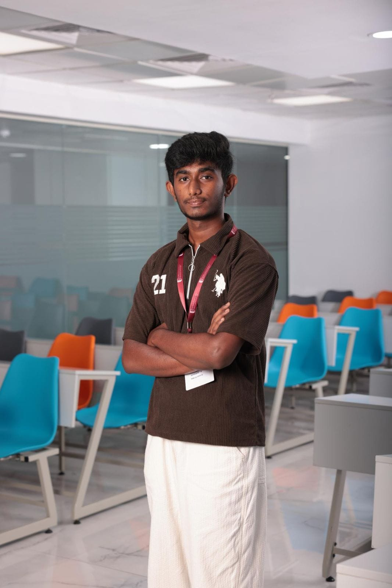

Python
Programming fundamentals, logic, automation and a growing base for data & ML.
CoreLearning
I'm Bharath — an AI/ML student who enjoys turning curiosity into practical systems, clean interfaces and measurable learning. Off-screen, you'll find me with a leather ball in hand.

PROFILE
I’m currently studying Artificial Intelligence & Machine Learning at NIAT. I’m building my foundation across programming, computational thinking, data and intelligent systems.
I like understanding how things work, then making them work better. My current focus is strengthening Python, exploring ML concepts and building small projects that turn theory into something tangible.
I value consistency over hype: learn a concept, experiment with it, break something, understand why, and iterate.
TECH STACK
Programming fundamentals, logic, automation and a growing base for data & ML.
Exploring intelligent systems, machine learning workflows and data-driven thinking.
Responsive interfaces using HTML, CSS and JavaScript with an eye for clean UX.
Breaking problems into smaller pieces, testing assumptions and iterating toward solutions.
SELECTED WORK
A responsive personal site designed to present my technical journey, interests and future direction.
A growing collection of experiments around datasets, model intuition, evaluation and practical ML workflows.
A future project exploring bowling and player-performance data to connect my two biggest interests: AI and cricket.
I'm a leather-ball cricket player and bowler. Cricket keeps me competitive, disciplined and comfortable with iteration — the same mindset I bring to learning technology.
Accuracy & consistency
Energy & discipline
Communication & trust
Focus under pressure
“Stay curious. Build consistently. Let the results compound.”
Understand the fundamentals before chasing complexity.
Turn concepts into projects that can actually be seen and used.
Review mistakes, refine the process and keep moving.
I'm open to learning opportunities, project collaborations and conversations around AI/ML, technology and cricket.
your-email@example.com ↗